Quick View of ЭЛЕКТРОНИКА МК-52 Part-1
Quick View of ЭЛЕКТРОНИКА МК-52 Part-1
苏联时期的RPN可编程电子计算器
简介
ЭЛЕКТРОНИКА МК-52是一台苏联在1983~1992年间被生产的RPN可编程计算器,发布时期的价格为115卢布，属于苏联生产的第三代可编程计算器。МК-52的功能与同时期的МК-61基本相同，但是它拥有一个非易失性电可擦可编程只读存储器（non-volatile EEPROM）。МК-52是唯一已知的内部存储形式为EEPROM的计算器。МК-52与МК-61的编程语言和功能是早期МК-54、B3-34和B3-21等电子计算器的升级版本，同时，就像许多苏联时期的计算器一样，МК-52的许多功能是没有写在文档中的。在1988年，МК-52随着联盟TM-7飞船升空，用以在机载计算机故障的情况下计算降落轨迹。
拆解
我在协助@橘猫丘丘w 搬家时从他那里获得了这台计算器。
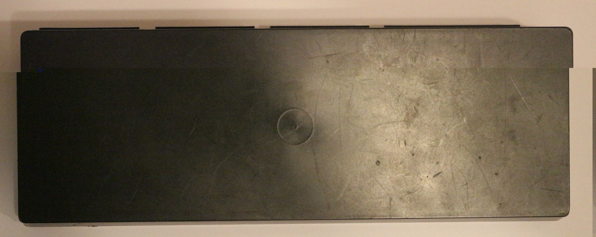
这台计算器的外观看起来比较完美，显示器使用的是VFD，看起来非常有年代感。
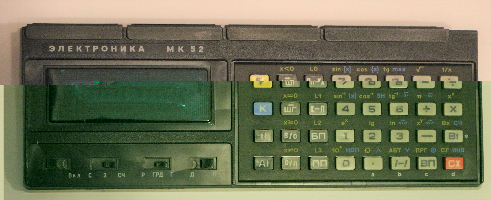
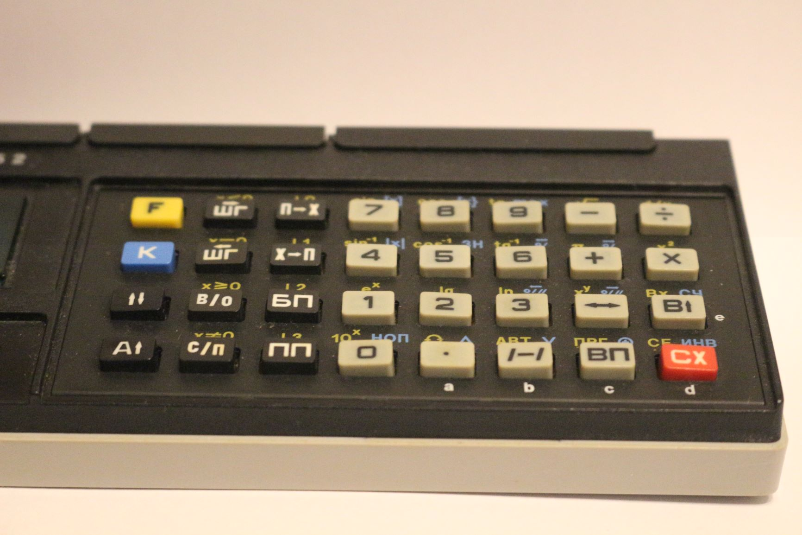
后面左侧是电源插口，可以插入附送的БП2-3型电源适配器来供电。
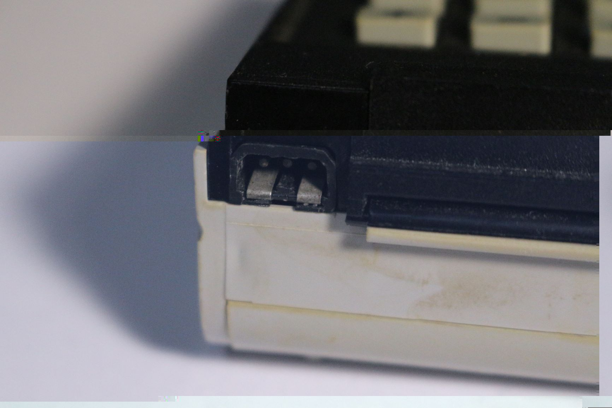
БП2-3的标准工作电压是220V，50Hz，所以不用担心电源转换的问题，在这个电压下它能提供大约6V的工作电压。
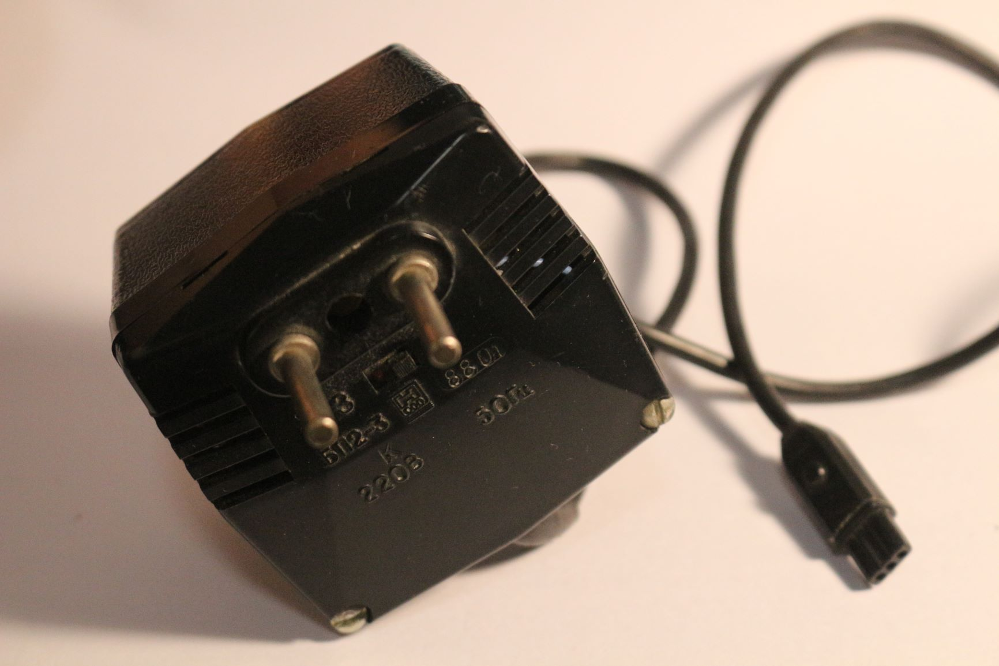
或者也可以在底部的电池仓塞入4节AA电池来给计算器供电。
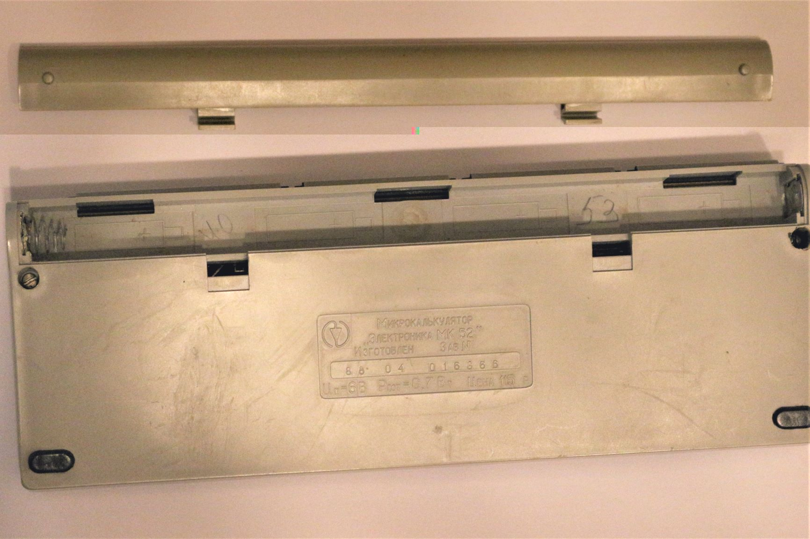
计算器的背部有一些挡板，打开后里面是扩展插槽，可以插入外接的内存卡等，甚至是游戏卡。
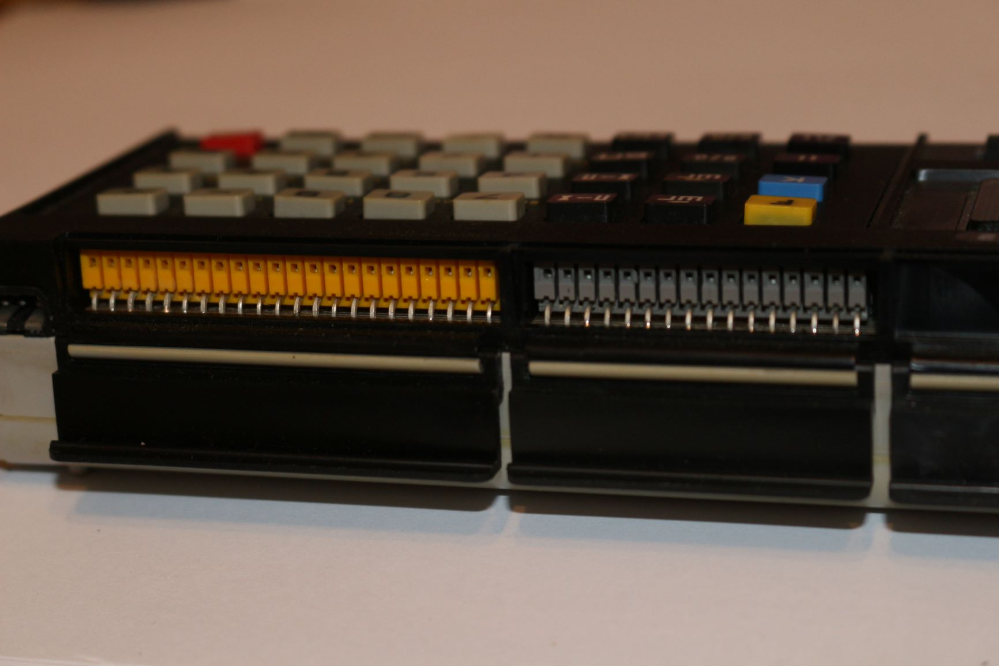
底部只有两颗螺丝固定，很容易就打开了。
电路板的没有阻焊层，所有的走线都是裸露的。
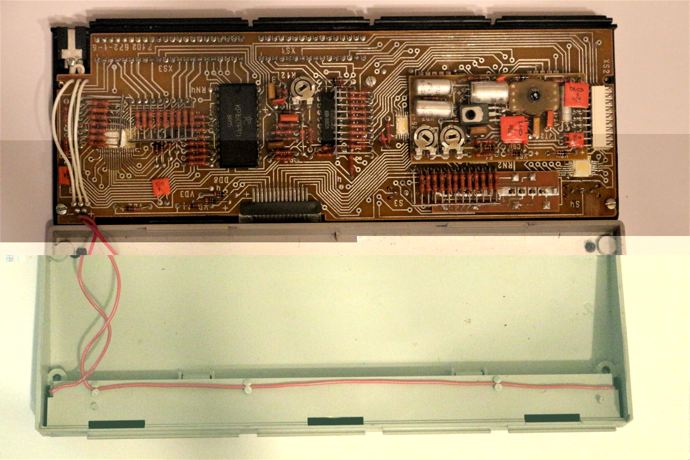
DC-DC模块，是插在主电路板上面的，用来驱动VFD。
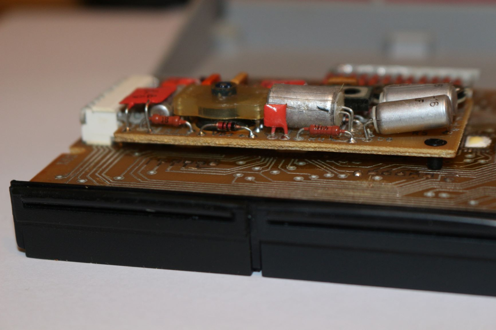
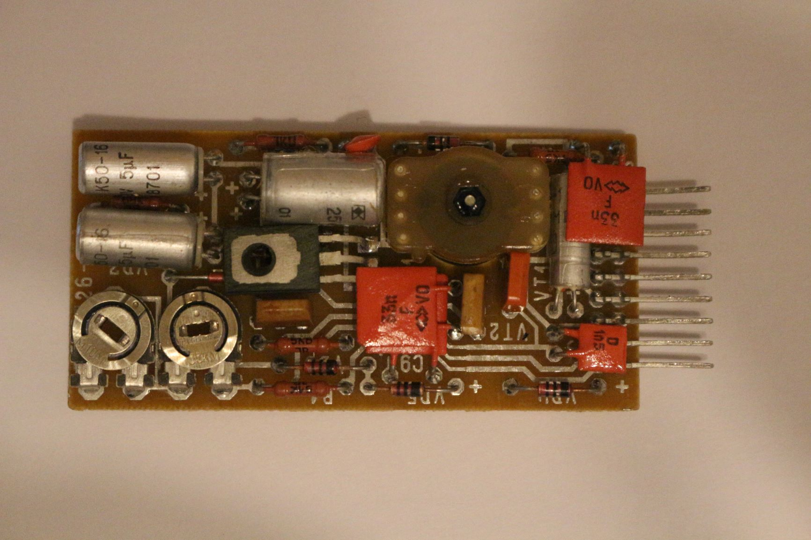
EEPROM芯片，型号是KP1601PP1，苏联货，有1k的内存。
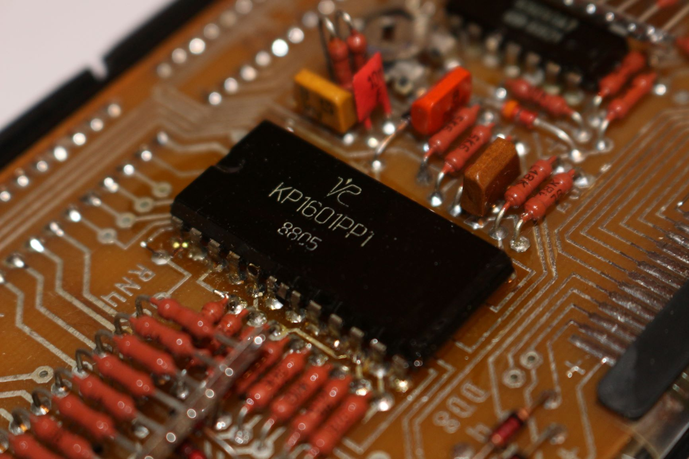
к561ла7，是逻辑与门。
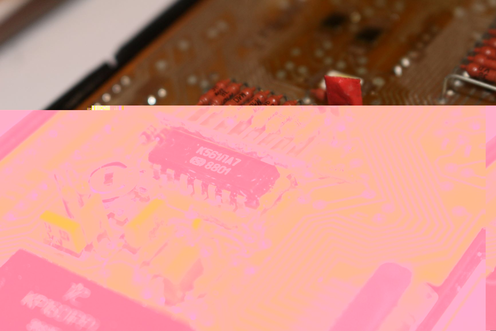
其余的芯片没有丝印，并不知道具体的型号，封装也是少见的样式。
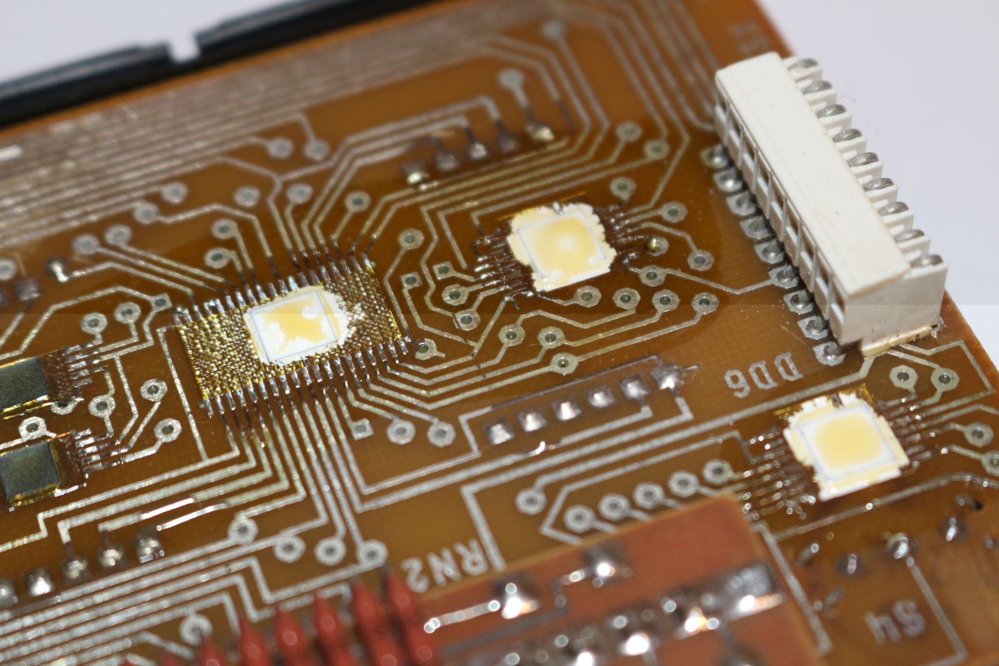
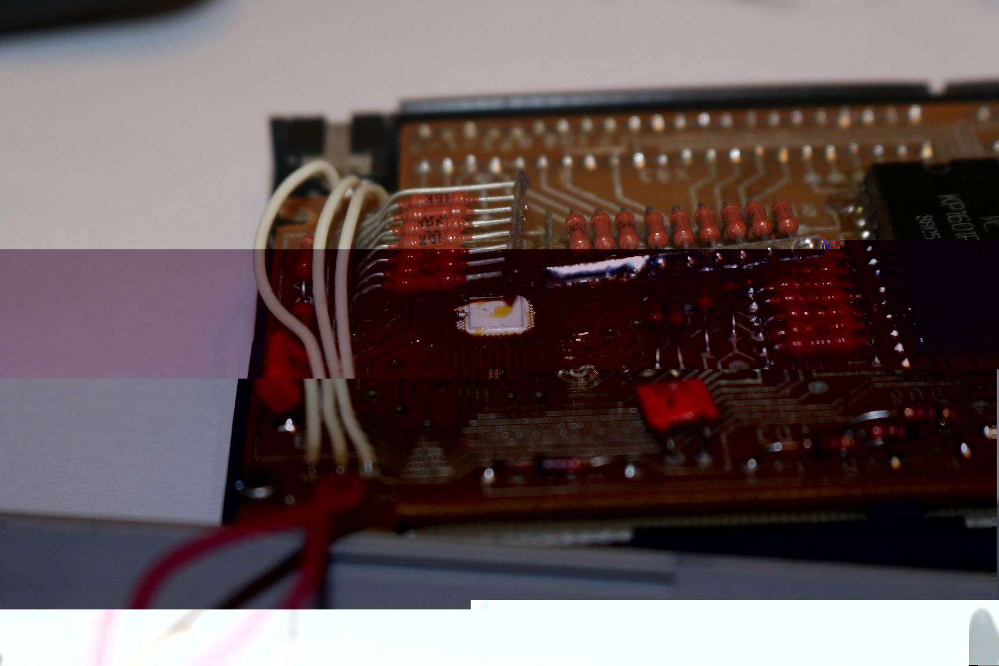
拧下三颗固定电路板的螺丝，就可以拆下电路板了。
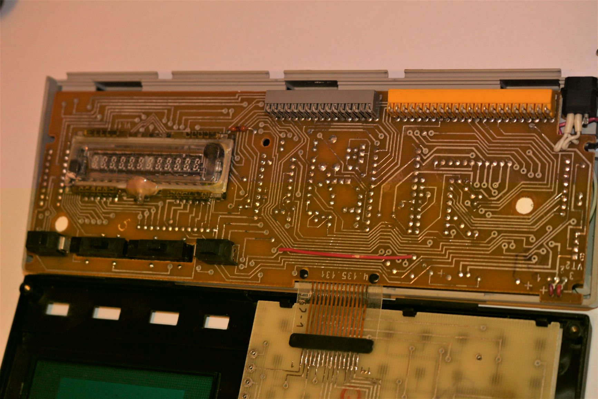
VFD显示管，相比液晶管看起来确实要脆弱不少。
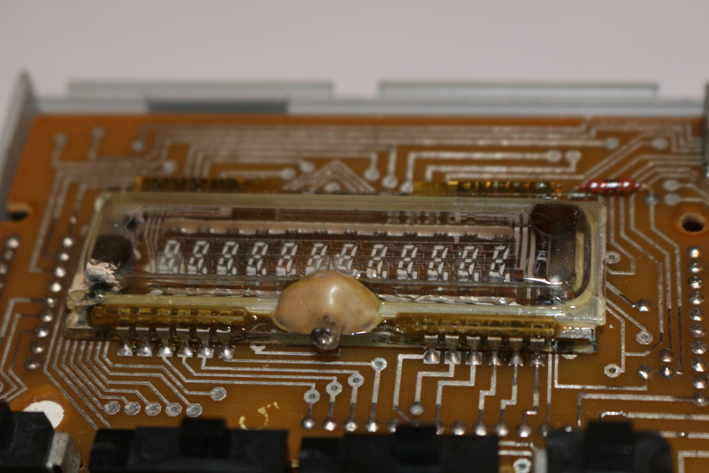
我太弱了，拆不下固定着的键盘。
计算
数值运算
由于是RPN计算机，所以在数的输入上与当前常见的计算器有所不同。
比如我们要计算3+5=8，通常我们会依次按下3+5=,就会显示正确结果8。
在逆波兰表达式(RPN)中,3 + 5被记为3 5 +,因此这里会依次输入3B↑5+,此时计算器显示结果8。
这里有一个按键B↑,它的操作是入栈。因为在计算机中RPN是使用栈来实现的。先将操作数入栈，遇到操作符时取出栈顶的两个元素进行运算，再将结果入栈，这样栈顶就是最后的结果。RPN记法的一个好处是不需要括号表示优先级。
МК-52的栈最多能存储4个操作数，向后继续输入操作数会将之前的操作数挤出去，所以要注意。
布尔运算
这台МК-52具有进行布尔运算的功能，输入、输出均为16进制形式，输入时以“8.”作为开头输入。但是我并未发现输入十六进制中A-F的方法，但是输出时，-,L,C,Г,E,空白，分别对应A-F。